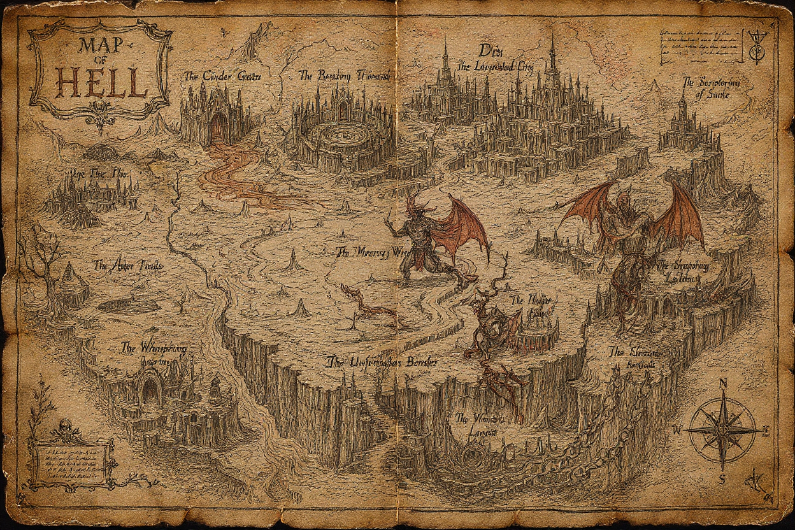

The Cinder Gate
The first threshold. New arrivals surrender their names long enough to hear the names others used for them.
ThresholdIntakeMaps are arguments. Borders are sentences. Every road below remembers who drew it.

The Cinder GateThe Brazen TribunalThe Unfinished CityScriptorium of SmokeThe Mercy WastesThe Unforbidden BorderDo not copy. Do not recite its roads. The danger begins not when this map is followed, but when its existence is known.
Hell is not a single furnace but a jurisdiction of shifting territories. Distance is measured by regret, and direction changes with the traveler's certainty.
The first threshold. New arrivals surrender their names long enough to hear the names others used for them.
ThresholdIntakeA court without a fixed judge. Evidence speaks in the voices of those affected by the accused.
CourtTestimonyA metropolis rebuilt nightly from failed utopias, ruined sanctuaries, and monuments erected to forgotten certainties.
CityExileForbidden drafts and erased gospels appear in ash before the pages burn clean again.
ArchiveDoctrineA pale expanse where no punishment is inflicted. Those who cross it must decide whether they can forgive themselves without permission.
WildernessMercyNo wall, guard, or lock prevents passage beyond Hell. Few cross because they were taught the gate could never open.
BorderFree WillEvery map of Hell places its maker at a safe distance from the condemned. Distrust the scale. Distrust the legend. Walk anyway.